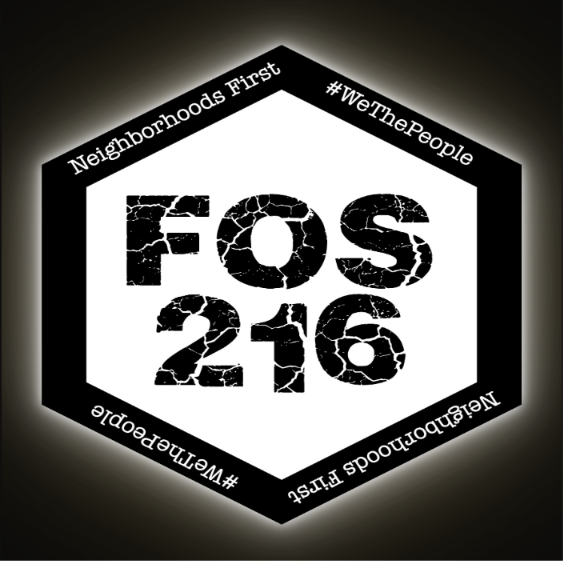
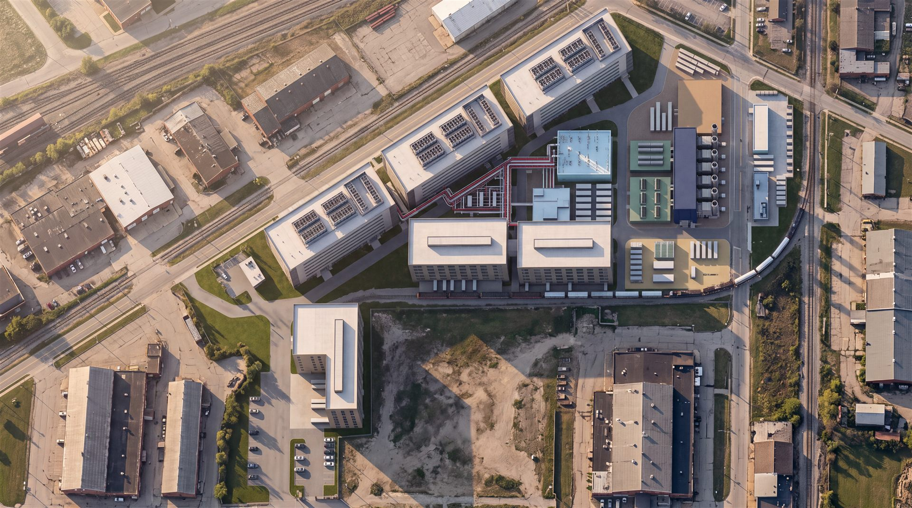

CONCEPTUAL INFORMATION ONLYNOT A PROPOSAL, APPROVAL OR ENGINEERED DESIGNfixourstreets216.com

The FixOurStreets216 Project · Collinwood, Cleveland, Ohio
Collinwood · 12610 E. 131st St.
DATAMANUFACTURINGPOWER GENERATIONHYDROGENCORPORATE PARK

A 34-acre brownfield at Kirby Ave, Coit Rd and E. 131st St., planned as one secured campus: hyperscale data halls, advanced manufacturing, a 300 MW power plant, hydrogen production and a corporate park, served by an on-site rail spur. AI-generated illustration guided by the master plan geometry.
PROJECTCollinwood Multi-Campus
ADDRESS12610 E. 131st St., Cleveland OH
PARCEL33.96 ac traced · ~35 ac reported
STATUSConceptual information only
DATEOctober 2026
Overview
The FixOurStreets216 concept for the former National Acme and Republic Steel ground in Collinwood. It puts hyperscale data halls, the factories that build their equipment, the power plant and hydrogen production that run them, and a public-facing corporate park inside one fence line. Every figure on this page is a planning-level assumption traced from imagery (±3–5 m), not survey or engineering.
33.96 acPARCEL · 137,429 M² (IMAGE TRACE)
2.05M sfGROSS FLOOR AREA · 6 BUILDINGS
300 MWON-SITE GENERATION · 6 × 50 MW
400 MWhBATTERY STORAGE · 100 MW
7,385 kg/dHYDROGEN · 16 MW PEM ELECTROLYSIS
1,728fINNER FIBER RING · 864F OUTER RING
326 mON-SITE RAIL SPUR · TRANSLOAD YARD
4 gatesSTAFFED CHECKPOINTS · G1–G4
~1,100 jobsPERMANENT · CAMPUS RUNS 24/7
1 · The campuses
Campuses A–C and the power plant are laid out in the master plan. Campus D, the corporate park, comes from an earlier version of the concept and still needs a place in the current layout (see Open items).
CAMPUS A · NORTH PAD
Hyperscale Data Campus
Three long data halls on the largest flat, already-cleared pad, parallel to Kirby Ave, with rooftop mechanical yards facing Kirby and the rail corridor, away from the neighborhoods.
3 halls · 5–6 stories · 1,196,539 sf GFA · closed-loop chilled water
CAMPUS B · EAST END
Power Generation
300 MW hydrogen-capable gas turbines, a 138 / 34.5 kV switchyard, 100 MW / 400 MWh battery storage and a cooling corridor, kept at the far end from the Kirby Ave front door.
300 MW · 400 MWh BESS · heat recovery assumed
CAMPUS B · EAST END
Hydrogen Production
A PEM electrolyzer hall, a compression building and a tube-trailer storage yard, piped to the turbine fuel header, the factories and an export stub on E. 131st St.
16 MW · 7,385 kg H₂/day · 350 bar
CAMPUS C · CENTER + SOUTH
Advanced Manufacturing
Data-center supply chain: switchgear, power skids, cooling skids, containerized IT modules and electrolyzer stacks, built next to the power campus and shipped by rail.
3 buildings · 5–6 stories · 854,613 sf GFA · rail dock
CAMPUS D · SOUTHWEST WEDGE
Corporate Park & Workforce Hub EARLIER CONCEPT
Offices, a 5,000 sq ft food hall and a training center on the Kirby Ave / I-90 ramp side, with its own gate: the public front door of the campus.
Not yet in the current layout · see Open items
2 · Master plan set
Six concept sheets drawn from the campus layout, plus the earlier full-plan and combined-final versions. Select any sheet to enlarge it.
Site as it stands today
EXISTING CONDITIONS
A vacant, graded brownfield
The parcel is open ground today: a bare, graded north pad, an open grass middle strip and an irregular southwest wedge. The container storage yard to the south and the buildings across Kirby Ave are outside the parcel.
I-90 and two rail corridors to the northwest
Cleveland Short Line rail east of E. 131st St.
Taft Ave and older industrial buildings to the south
3 · Building schedule
ID
Name
Use
Levels
Height
Footprint
GFA (sf)
HS-1
Hyperscale Building A · Data Hall 1
Hyperscale data
6
36 m
6,576 m²
424,732
HS-2
Hyperscale Building B · Data Hall 2
Hyperscale data
6
36 m
6,575 m²
424,645
HS-3
Hyperscale Building C · Data Hall 3
Hyperscale data
5
30 m
6,450 m²
347,162
MFG-1
Manufacturing Building A
Switchgear, power skids, modular data-center assembly · rail dock
6
42 m
4,879 m²
315,092
MFG-2
Manufacturing Building B
Cooling skids, containerized IT modules · rail dock
5
35 m
4,642 m²
249,803
MFG-3
Manufacturing Building C (L-shaped)
Electrolyzer stack and fuel-cell components · truck only
5
35 m
5,383 m²
289,718
PWR-TUR
Turbine Hall
6 × 50 MW gas turbines
1
24 m
3,720 m²
—
H2-ELZ
Electrolyzer Hall
16 MW PEM electrolysis
2
14 m
2,537 m²
—
H2-CMP
Compression Building
Compression to 350 bar
1
10 m
1,409 m²
—
Total buildings
42,171 m²
2,051,152
Open yards (not buildings): switchyard 2,480 m², battery storage 1,916 m², cooling corridor 1,278 m², hydrogen storage yard 1,456 m², rail transload yard 6,264 m², manufacturing rail dock 2,893 m². Hyperscale floor-to-floor 6 m; manufacturing 7 m.
4 · Power generation + heat recovery
PWR-TUR · TURBINE HALL
300 MW gas turbines
Six 50 MW hydrogen-capable aeroderivative gas turbines (assumed), burning a natural gas / hydrogen blend.
24 m tall · 3,720 m²
PWR-SWY · SWITCHYARD
138 / 34.5 kV
Interconnect to Cleveland Public Power or the utility transmission system; route still to be set.
2,480 m² · voltages assumed
PWR-BESS · BATTERY STORAGE
100 MW / 400 MWh
Lithium iron phosphate (assumed) containers for firming, ride-through and peak shaving.
1,916 m²
PWR-COOL · COOLING CORRIDOR
Fin-fans + absorption chillers
Air-cooled condensers and fin-fan coolers, plus absorption chillers driven by turbine waste heat, feeding the data-hall chilled-water loop.
1,278 m²
Heat recovery (HRSG) ASSUMED
COMBINED HEAT AND POWER · PROPOSED
One HRSG per turbine
The base layout has no HRSG, but the cooling corridor's "absorption chillers on turbine waste heat" needs one. The proposal places six outdoor heat recovery steam generators in the east half of the turbine hall footprint, each with its own 38 m exhaust stack. Recovered heat runs in a red-banded pipe rack to the absorption chillers that cool the data halls.
Main proposal: CHP. HRSG hot water or low-pressure steam drives absorption chillers.
Alternative: full combined cycle with a steam turbine, which would need its own building (rendering below).
The reclaimed-heat corridor in the plan legend is reserved for this pipe rack.
5 · Hydrogen production
H2-ELZ · ELECTROLYZER HALL
16 MW PEM
7,385 kg of hydrogen per day at about 52 kWh/kg, fed by demineralised water on UT-W-2, roughly 19,500 gal/day at about 10 L per kg.
2 levels · 14 m · 2,537 m²
H2-CMP · COMPRESSION
350 bar
Feeds the storage yard and the turbine fuel header.
10 m · 1,409 m²
H2-STO · STORAGE YARD
Tube trailers + vessels
Ground tube trailers and pressure vessels. NFPA 2 setbacks are not yet sized; confirm them with the fire marshal.
1,456 m²
Pipeline
Route
Size
Length
H2-PIPE-1
Electrolyzer → compression
DN150
8 m
H2-PIPE-2
Compression → storage
DN100
7 m
H2-PIPE-3 / UT-H2-1
Storage → turbine fuel header
DN200
136 m
UT-H2-2
Supply to manufacturing (fuel cells, process)
DN80
46 m
H2-PIPE-4 / UT-H2-3
Export / offtake stub to E. 131st St.
DN200
65 m
6 · Infrastructure
Utility corridors · 2,355 m
ID
Type
Specification
Length
UT-P-1
Power
34.5 kV duct bank, switchyard → HS-2 / HS-1
252 m
UT-P-2
Power
34.5 kV duct bank, turbine hall → spine, manufacturing, HS-3
413 m
UT-P-3
Power
13.8 kV underground, south wedge / MFG-3
72 m
UT-P-4
Power
34.5 kV dedicated electrolyzer feeder
107 m
UT-H2-1/2/3
Hydrogen
DN200 header, DN80 to manufacturing, DN200 export stub
247 m
UT-W-1
Water
12 in ductile iron main from E. 131st St., potable + fire
Not in source data; reserved for the HRSG pipe rack
—
FIBER BACKBONE · DUAL RING
Outer ring: 864 fiber, 4 × 4 in duct bank, 1,862 m around the perimeter.
Inner ring: 1,728 fiber, 6 × 4 in duct bank, 1,105 m linking the data halls and factories.
The rings run in opposite directions, so a single cut never isolates a building.
Laterals to all six buildings and the switchyard, plus ring ties; 269 m in total.
Diverse carrier entrances at G1 Coit Rd and G2 E. 131st St. Total route: 3,236 m.
ROADS + RAIL
Campus spine (G2 E. 131st St.): 14 m collector, 335 m.
West connector to G3 Kirby Ave: 12 m, 244 m. G1 Coit Rd entry: 12 m, 54 m.
Service roads (data halls, power / hydrogen, south wedge): 10 m, 584 m in total. Truck turns designed to a 15 m radius (WB-67).
Taft Ave connector to G4: 103 m off-site; needs an easement or acquisition.
Rail: 326 m on-site spur, 6,264 m² transload yard (inbound steel, transformers and switchgear; outbound modular data-center units), and a dock apron serving MFG-1 / MFG-2. The 140 m off-site link to the Cleveland Short Line needs a railroad agreement, an easement and an at-grade crossing of E. 131st St.
7 · Security gates + access
Every entrance is a staffed checkpoint: a glass guard booth on an island between the inbound and outbound lanes, an LED-lit canopy, drop-arm and crash-rated wedge barriers, anti-ram bollards, badge readers, license-plate and dome cameras, and a 2.4 m anti-climb mesh perimeter fence. Gate locations come from the road network; their roles are proposed.
8 · Job creation · 24/7 operations
The campus never shuts down. Data halls, the power plant, hydrogen production, security and emergency response are staffed around the clock, and the factories run three shifts. Below is every permanent position the campus would need to fill, with approximate Cleveland-area pay.
HOW 24/7 STAFFING IS COUNTED
A post staffed every hour of the year takes about 4.2 people: 8,760 hours ÷ roughly 2,080 hours per full-time worker, on rotating 12-hour or three 8-hour shifts.
Roles marked 24/7 are filled around the clock. Day + on-call roles cover nights and weekends by on-call rotation.
Pay is base pay before benefits, overtime and shift differentials; night and weekend shifts usually earn more.
Payroll uses the midpoint of each range; hourly roles are figured at 2,080 hours a year.
NOT COUNTED HERE
Construction jobs: temporary, spread over several build phases.
Corporate park office tenants: if Campus D adds about 160,000 sf of offices, that could add roughly 450–550 more jobs, depending on tenants.
Indirect and induced jobs at suppliers, contractors and local businesses.
Outside contractors for major turbine overhauls, HRSG inspections and large data-hall fit-outs.
Positions and headcounts are planning estimates based on typical staffing for facilities of this type and size. Pay ranges are approximate 2026 Cleveland-area figures; confirm them against current Bureau of Labor Statistics data for the Cleveland-Elyria metro area and actual employer offers. The earlier concept's calculator (below) uses simpler ratios and gives a different job count.
9 · Renderings
AI-generated illustrations (Adobe Firefly), each guided by a reference drawn from the master plan geometry. They show character and lighting, not engineered design. Select any image to enlarge it.
Aerial
Eye level · outside the campus
Eye level · inside the campus
Building interiors
10 · Phasing
PHASE 0
Control and ground
Assemble ownership, complete Phase I/II environmental work, set the cleanup path, confirm zoning and open the CPP interconnect study.
PHASE 1
Power first, front door
Power plant and interconnect, the Campus D food hall and training center, the first data hall on the north pad and the first manufacturing building.
PHASE 2
Scale the halls and the hydrogen
The remaining data halls, the electrolyzer and storage, the second and third manufacturing buildings, and offices in Campus D.
PHASE 3
Build-out
Final halls and yards, remaining manufacturing, parking and permanent landscaping.
Construction sequence ILLUSTRATIVE
11 · Program calculator
A planning-level sketch tool from the earlier concept. It splits the parcel by that concept's zone shares (A 35.9%, B 8.6%, C 40.9%, D 14.6%) and applies planning ratios, so its results won't match the building schedule above. Change any value and everything recalculates.
PARCEL + ASSUMPTIONS
RESULTS
Campus
Acres
Gross sq ft
Load MW
A · Hyperscale
B · Hydrogen + power
—
C · Manufacturing
D · Corporate park
Campus total
Firm on-site supply with reserve
Hydrogen output at full electrolyzer load
Electrolyzer feed water (about 10 L per kg H₂)
Rough permanent jobs (A + C + D)
Jobs use planning ratios: A about 0.5 per MW, C about 0.9 per 1,000 sq ft, D about 3.5 per 1,000 sq ft. Replace them with tenant numbers once known. Data-hall cooling is closed-loop; the water figure is electrolysis only.
12 · Site facts + constraints
FROM THE AERIAL
The north pad is bare, graded ground: the natural home for the large, repetitive data halls.
The middle strip is open grass, wide and shallow, which suits long manufacturing buildings.
The southwest wedge is open and irregular, close to the Kirby Ave / I-90 ramp side, which suits a public-facing corporate park.
Rail corridors and I-90 lie to the northwest across Kirby Ave; E. 131st St. and another rail line lie to the east; Taft Ave and older industrial buildings lie to the south.
No homes touch the parcel edge, so the 8 ft wall / pine buffer rule isn't triggered; the fence line is for security.
PUBLIC REPORTING TO VERIFY
The corner is former National Acme and Republic Steel ground. A county-commissioned consultant study called it a typical brownfield with a long industrial history; county council members called it workable to clean up.
The county's environmental report was shared with the Bibb administration.
County council members once floated the site for a new county jail. The jail is now being built in Garfield Heights, so that competing use no longer applies.
A county official described the neighboring Eddy-Kirby site as having several owners; confirm the ownership of every piece inside the outline.
Local reporting describes about 35 acres of industrial land at this corner; the image trace measures 33.96 acres.
13 · Open items
Parcel acreage and owners from county records. They drive every number on this page; the geometry is an image trace (±3–5 m), not survey.
Electric service: confirm whether Cleveland Public Power or The Illuminating Company serves this corner, and where the nearest transmission-class interconnect sits.
Power technology: the earlier concept described KARNO power modules; the current layout assumes six 50 MW aeroderivative gas turbines. One needs to be chosen.
Heat recovery: the HRSGs and the reclaimed-heat pipe rack are proposed here, not in the source data. Decide CHP versus full combined cycle.
Campus D placement: the earlier concept puts the corporate park in the southwest wedge, where the current layout has Manufacturing Building C (MFG-3). Which use takes the wedge, or where the other moves, is still open.
Hydrogen separation distances and storage limits under the fire code and NFPA 2, set with the fire marshal.
Zoning and any use restrictions tied to the cleanup, including how a data center, hydrogen production and manufacturing fit together.
Anchor tenants for Campuses A and C, which set real hall sizes, power density and the manufacturing mix.
Off-site agreements: the Cleveland Short Line connection (railroad agreement, easement, at-grade crossing of E. 131st St.) and the Taft Ave road connector (easement or acquisition).
Noise: mechanical yards face Kirby Ave and the rail corridor, away from the neighborhoods; a noise study is still needed.
Security design: gate roles (G2 main, G1 power + hydrogen service, G3 employees, G4 logistics) and checkpoint details are proposals for review.
14 · About this concept
HOW IT WAS MADE
The parcel outline and every building, road, rail and utility line were traced from aerial imagery and matched to public street centerlines. Positions are approximate (about ±3–5 m) and are not a survey.
Sizes, capacities and outputs are planning-level assumptions, not engineering, permitting or tenant commitments.
Renderings are AI-generated illustrations (Adobe Firefly), guided by drawings of the concept layout. They show character and lighting only.
CONCEPTUAL INFORMATION ONLY
This concept is shared to support community discussion about what the site could become.
It does not represent the plans or commitments of any property owner, public agency, utility or company.
Everything on this page may change as ownership, environmental, zoning, utility and community input are worked through.